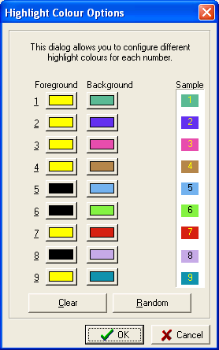

This dialog allows you to configure specific highlight colours for different numbers. These colours are used when the numbers are highlighted, and different colours are especially useful when multiple numbers are highlighted at once.